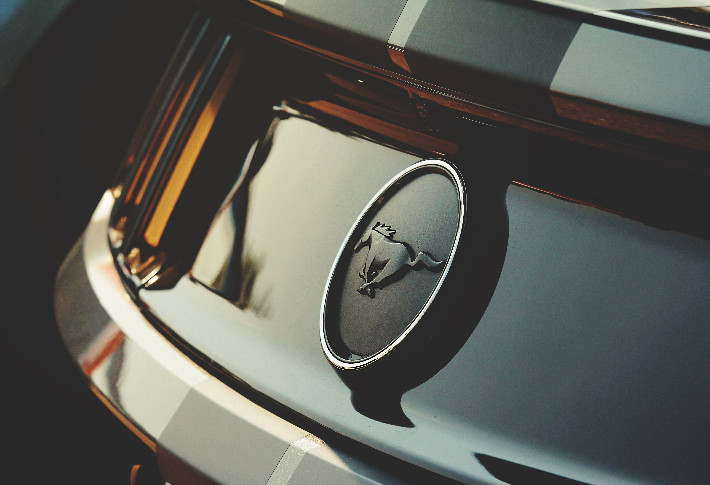
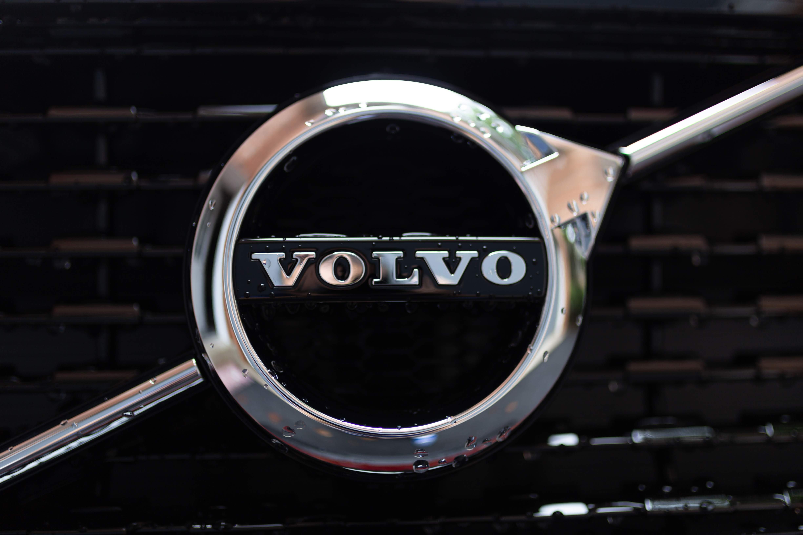
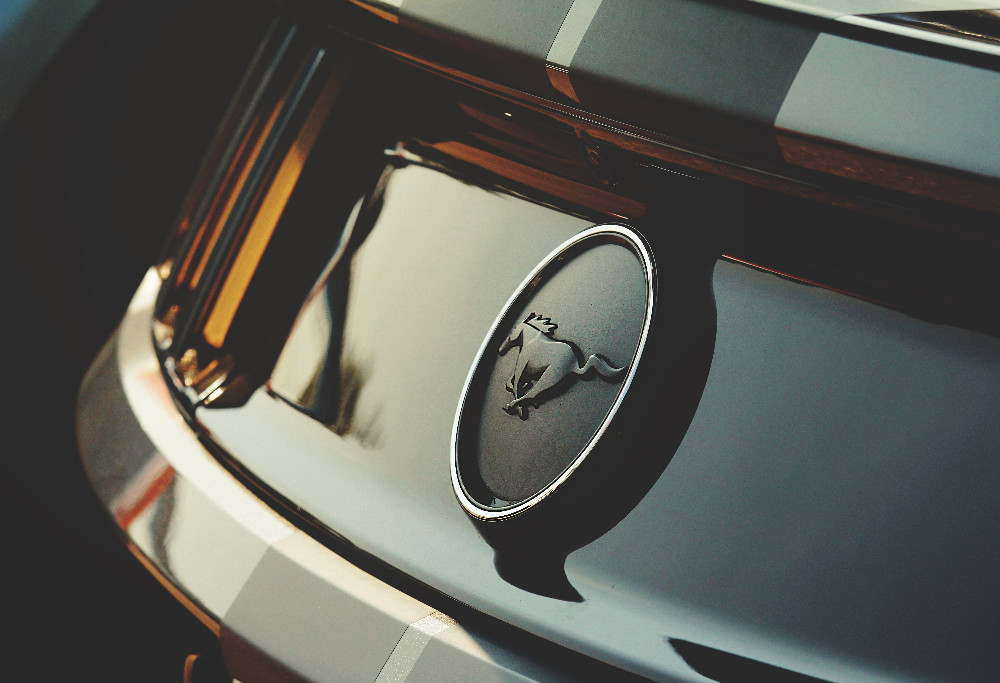
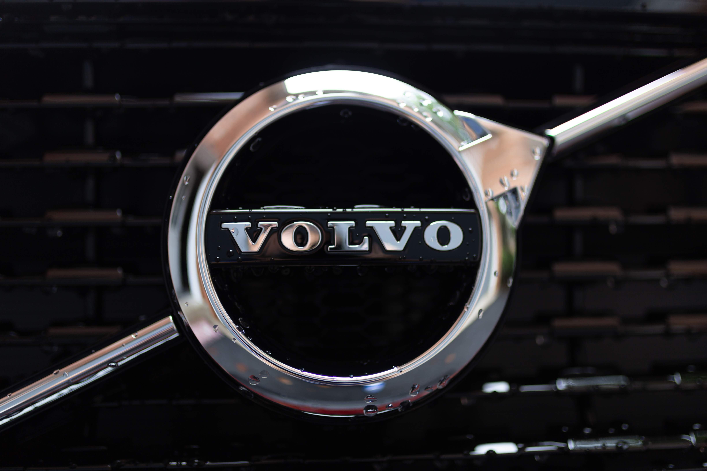
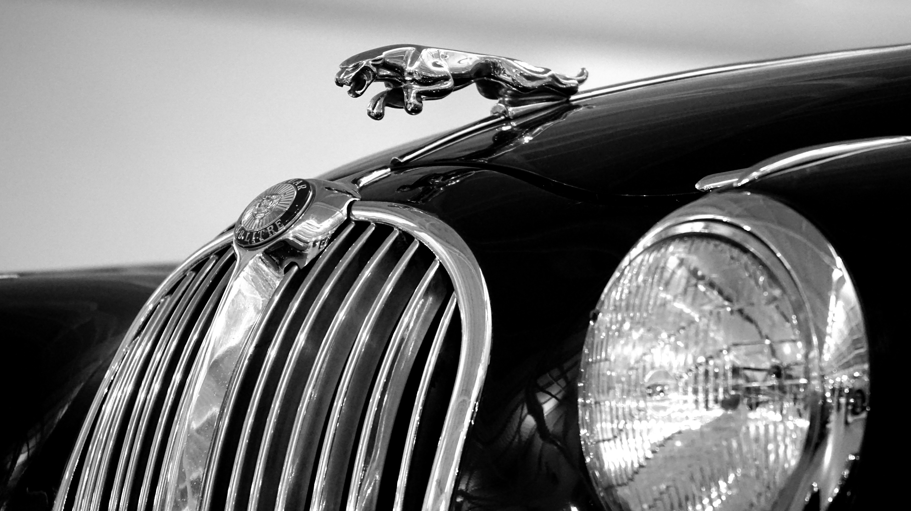
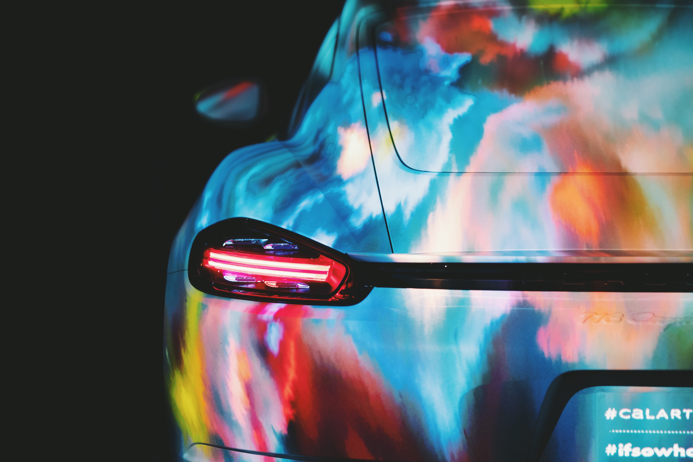
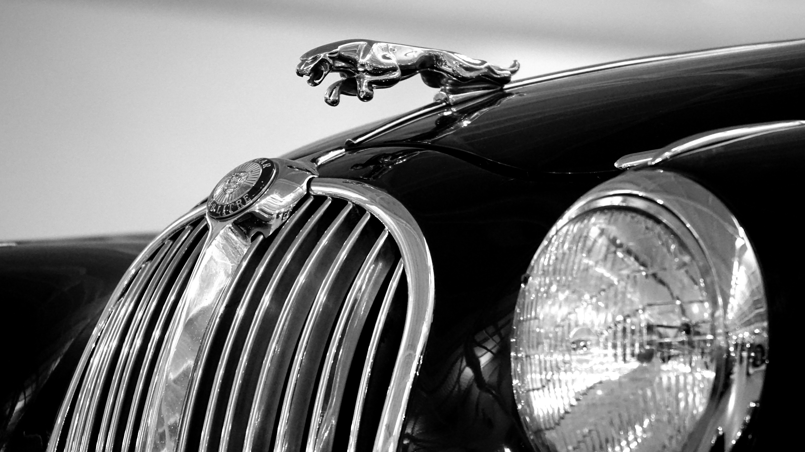
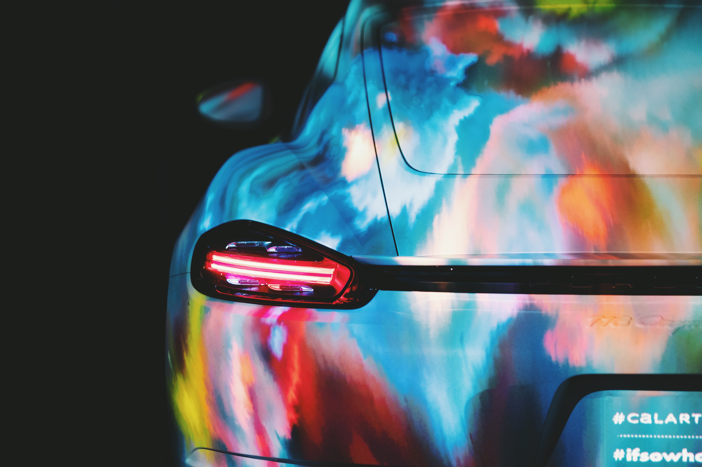

 



-
Autonomous Vehicle --
An autonomous car is a vehicle that can guide itself without human conduction. This kind of vehicle has become a concrete reality and may pave the way for future systems where computers take over the art of driving. An autonomous car is also known as a driverless car, robot car, self-driving car or autonomous vehicle.
Driver Override Systems -- With the advancement of automobile technology in cars, driving has become safer and more convenient than ever before. Safety features like anti-lock braking system (ABS), electronic brake-force distribution (EBD), brake assist, crash avoidance systems, automatic parking control, brake override system etc., ensure passengers safety. Among all the features, driver or brake override system is one of the most advanced and important active safety features in cars.
Brake override is also known as Smart pedal. The system’s sensors or ‘smart’ technology recognize mixed signals or an electric malfunction when the gas and the brake pedals are being pushed simultaneously. After recognizing an abnormal acceleration, it overrules the command and sends signals to the central computer system to stop the vehicle safely.
Biometric Vehicle Access -- Biometric technology is an automated access monitoring system, based on behavioral or physiological characteristics, used for verification and recognition of a manual access. Many versions of biometric security system are available in the market such as voice verification, fingerprints, hand geometry and retina/ iris/ face recognition. It’s a user-friendly, reliable and convenient identification and monitoring method.
Biometric technology is an automated access monitoring system, based on behavioral or physiological characteristics, used for verification and recognition of a manual access. Many versions of biometric security system are available in the market such as voice verification, fingerprints, hand geometry and retina/ iris/ face recognition. It’s a user-friendly, reliable and convenient identification and monitoring method.
Comprehensive Vehicle Tracking -- The vehicle tracking system uses a combination of various technologies to keep real-time data on the position of a car. The technology has helped recover several stolen vehicles and track them. GPS tracking is among the most popular vehicle tracking systems, but the same can be done with the help of cellular or radio transmitters too.
Active Window Displays -- Most modern luxury cars come with head-up display that provides information to drivers, while staying focused on the way ahead. Information like driving direction, vehicle’s speed, remaining fuel, location, low visibility weather, smartphone connectivity etc. can be easily accessed by drivers. An advanced HUD system provides turn-by-turn navigation instructions via satellite and also enhances road view display by using infrared or low light cameras.
Remote Vehicle Shutdown -- Auto manufacturers are investing heavily in the development of new technologies to keep vehicles safe and advanced. The increase in the number of subprime auto loans has compelled lenders to use a new technology, remote vehicle shutdown, which allows them to remotely disable the ignition of a car when a borrower falls behind on payments. Not just auto lenders, Police too use remote vehicle shutdown technology in the United States. It allows them to remotely halt high-speed hunt.
Active Health Monitoring -- Imagine that you are driving far off from the city and suddenly a crackling pain cracks up in your head and you start losing consciousness. Your car realizes your derailing condition, takes control, pulls the car aside, and informs the nearest medical facility. This is what we call active health monitoring, the future of automobile technology that will soon become a part of regular lifestyle in coming years. The technology is expected to have a huge impact over safe driving, one of the major concerns faced by those who are bound to go on long drives every now and then.